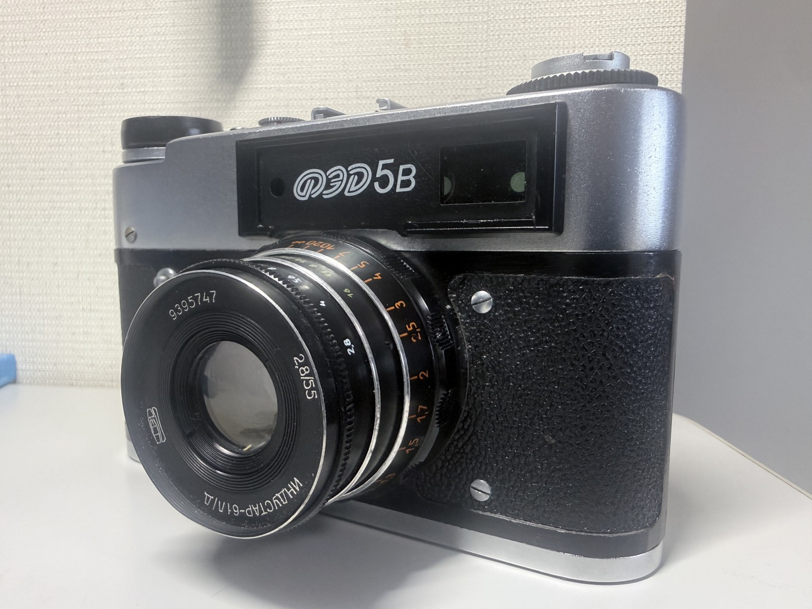
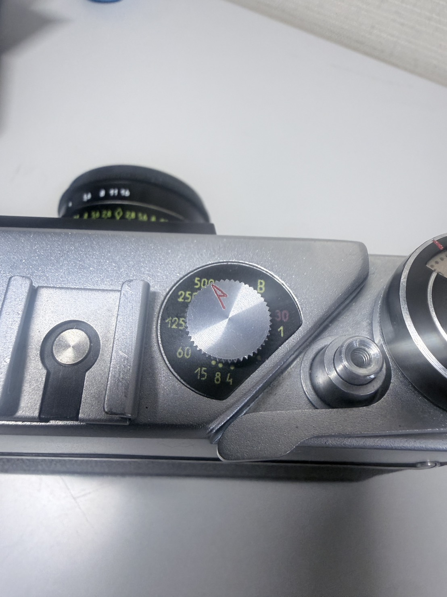
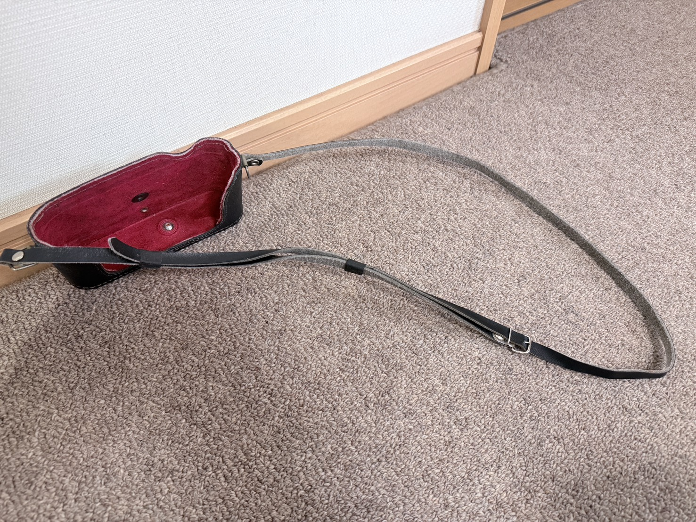
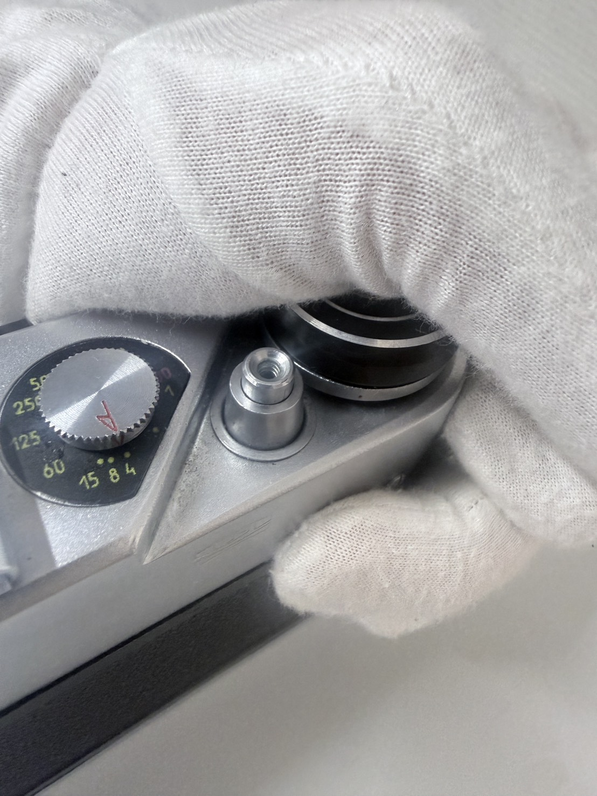

【FED 5B】
【浪漫以外は何もない余～】
基本情報
| メーカー | 【FED】 |
|---|---|
| 機種名 | 【FED 5B】 |
| 発売年 | 【1975年】 |
| 使用フィルム | 【35mmフィルム】 |
| 撮影方式 | 【連動式レンジファインダー】 |
| レンズマウント | 【L39（LTM）マウント】 |
| シャッター | 【フォーカルプレーンシャッター・B・1/500】 |
| 露出 | 【マニュアル露出】 |
外観

うむ、特段のへんてこりんポイントもない普通？のレンジファインダーカメラですね。
特徴
このカメラの特徴？はソ連製であることでしょうか。あとは私の持ってるレンジファインダー系唯一のレンズ交換式でしょうか。 個人的にはそんなもんです。
スペック
スペックははっきり言ってクソ。そこらへんはしゃーないですね。
露出計はない・・・ってかそもそも[露出計付きのFED 5]から廉価版として露出計を外したのが5Bなので
あるほうがおかしいですよね、存在意義として。
シャッタースピードはそれなりにありますけど、私の持ってる奴らと比べると若干高速側が少ない感じ。

ピント合わせはほんとにクソ。まぁ、レンジファインダー式の宿命ですけど、オリンパス35と比べてもピント合わせが しずら過ぎる。クソっぷりは下記でこき下ろします。
セルフタイマーもついてます。これは特段の不満ないですね。
実際に使ってみて
うーん。普通につかちゃえば問題ないですね・・。ピント合わせは絶望的です。撮影する特に景色がごちゃごちゃしてると
すぐ合わせにくくなります。だから壁とかのっぺりしてる所に動かして合わせるとやりやすくなります。
あと忘れがちになるのが”シャッタースピード”。ソ連式独特なのかこのカメラ系だけなのかは詳しくないので知りませんが、
このカメラ巻き上げてからシャッタースピード変えないといけないんですよね。なんか機構的問題なのか何なのかは知りませんが
巻き上げる前にシャッタースピード変えるって結構普通じゃないですか。撮影前に測光してその時に変えるとか、
そういうことをしようと思うとカメラが壊れちゃうらしいので気を付けたい・・・所なんですけど手癖の関係で毎回壊しそうになります。
うーん。なかなかこんな構造聞かないし、ソ連製特有なんですかね？
因みにこれ、ストラップ金具がついていないので、首から下げようと思ったらカバーが必要です。
私はセットでついてきたカバーを使ってるんですが、前の所有者が豪快な人だったぽく、前のカバーはざっくり切られてました。
そんなことするぅ・・？

撮影について
上で書いた通り、シャッタースピードなどがクソなんですがここでは巻き上げ等についいてこき下ろします。
まず、フィルムを撮りきった際のロック解除、どこにあると思います？
そうシャッターボタンの下にある円柱状の奴ですね。これを押すとシャッターボタンごと下がってロックが解除されます。
まぁ～これがわかりずらいことこの上ない。これのせいでフィルム丸々一本ダメになりましたからね。

（これのせいで辛辣になってるのは内緒☆）
クソが！全く・・・。〇ね！今フィルム高いんだよ！！！！！！！社会主義者が！！！！！
入手について
入手はヤフオクっすね。前から気になってて臨時収入があったのでノリで買いました。 うん、ノリと勢いで生きてる人なので自己批判ですが、気をつけたほうがいいですね。まぁ、後悔はしてないですけど。
金額
5000~6000円くらいだったと思います。まぁ、どこかは忘れたけどどっかに問題があって安かったと思います。
現在の状態
問題はないです。・・と言いたかったですか、たまに巻き上げの軸とシャッター幕が脱落？して巻き上げが二回必要になるときがあります。 うーん・・・。
まとめ
構造自体は面白いんですけど、やっぱりピント合わせがクソすぎるのと、巻き戻し関連で嫌な思いでしかないですね。 多分構造自体は大丈夫なんですけど、思い出がクソになっちゃたので思い出の上書きをしないとそんなに使わなさそう・・・。